Asset kit 85 · Silica Atlas · open brief
Asset kit 85 · Silica Atlas · open brief
Ink, then glass.
The first app was an engraving: careful, monochrome, hand-made. The work today is the same drawing grown into polished glass. Haeckel's 1904 plates of diatoms and radiolarians (living things that build their shells out of silica) are the subject. Their glass is the metaphor: precise structure, real depth, light passing through.
Then / now, one plate
Two aligned renders (ink print, glass) share one seam. Move the pointer across; it springs. Below it is the baked composite, a portrait cut for phones, and the separate halves for building the live seam.
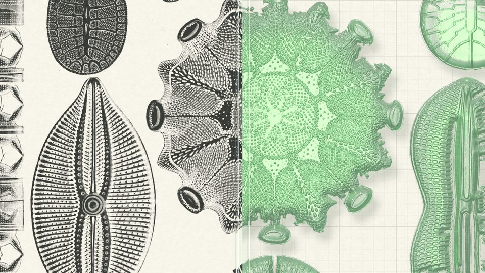
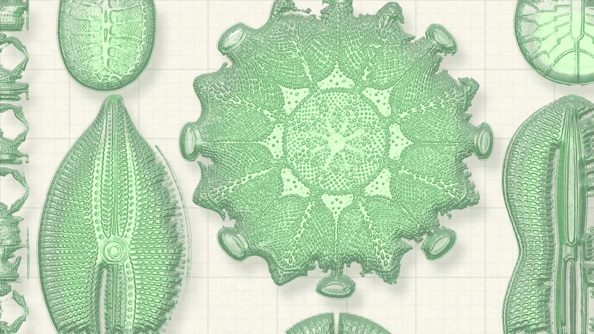
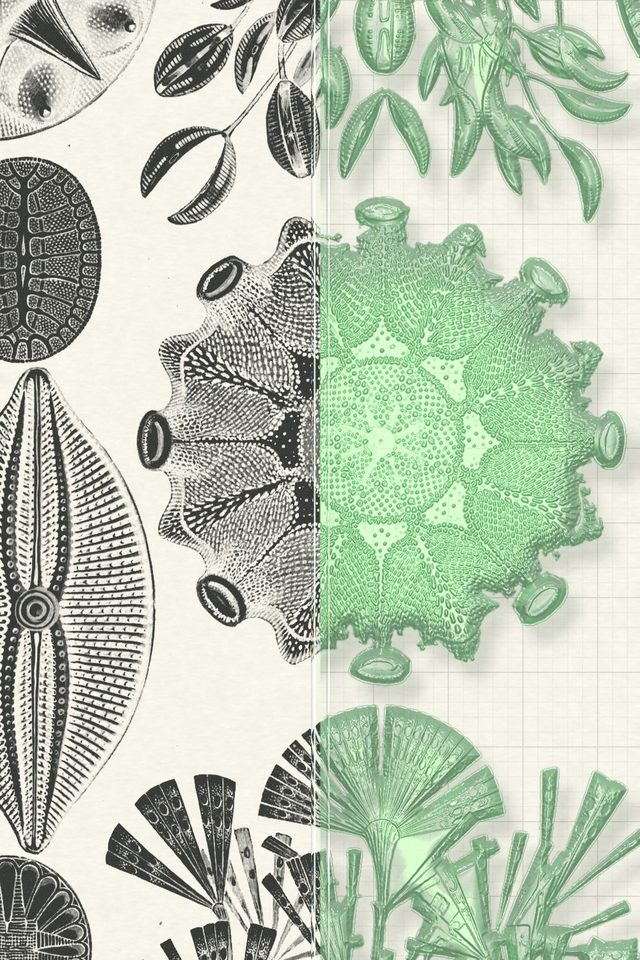
A chorus of lenses
Ray-traced ball lenses (two refractions, IOR 1.512 to 1.526 for a hair of dispersion) hovering over a radiolarian plate. Each one holds the plate upside down, the way real glass does. Their focused light lands as a green caustic in the shadow. Hover it: the loupe is motion study 4.
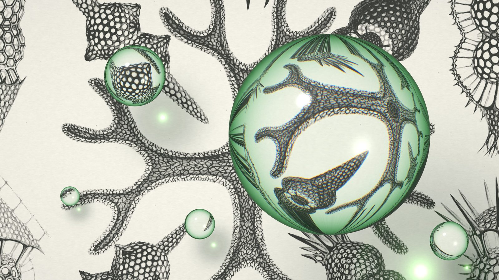
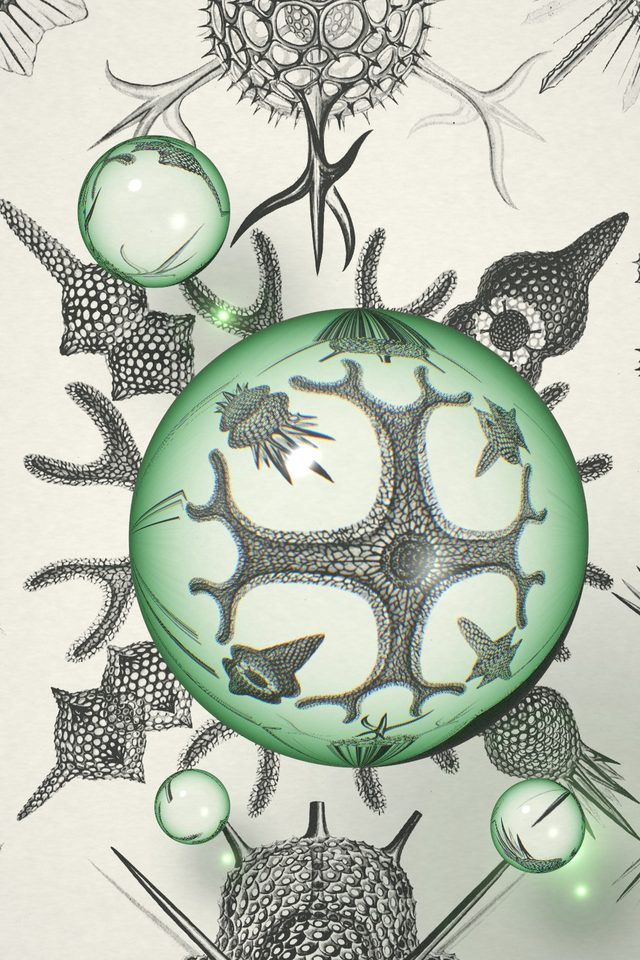
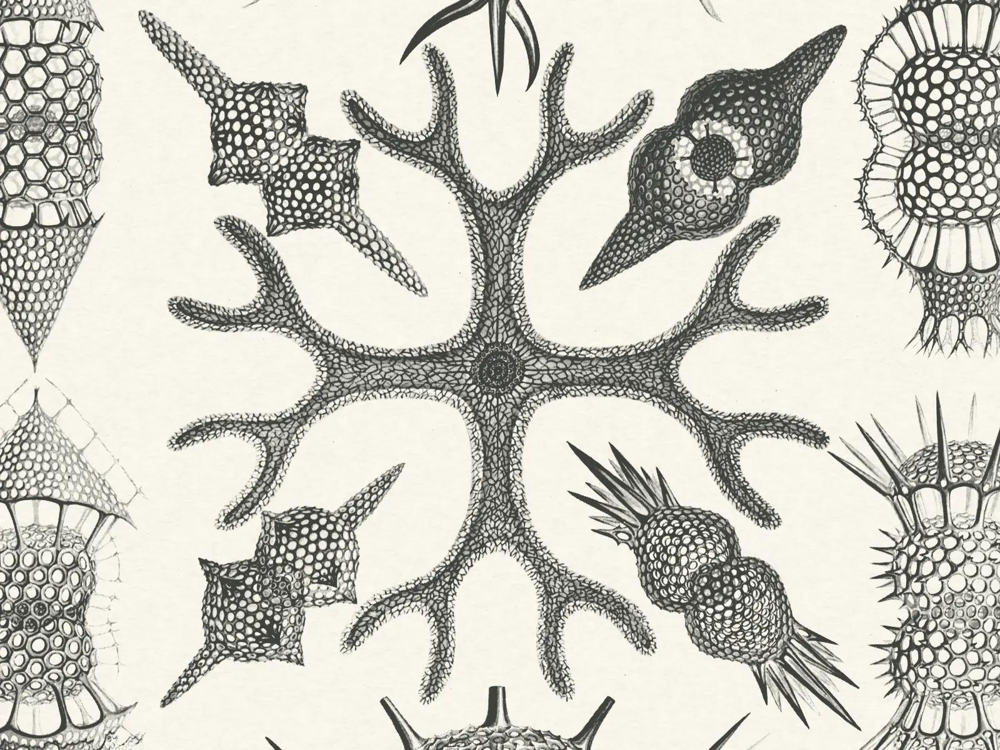
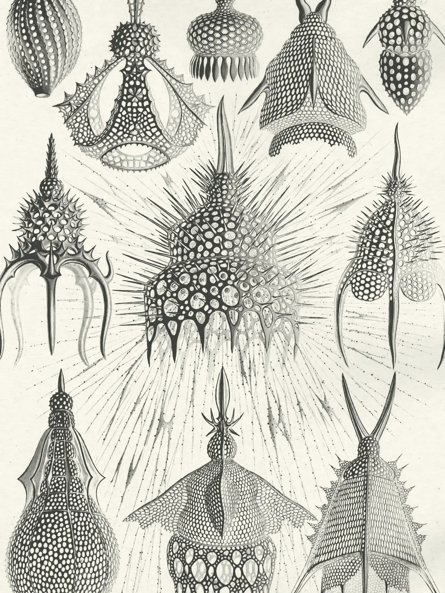
One lens, two halves
The mark is the hero in miniature: an engraved half and a glass half meeting at a seam. The wordmark is Bricolage Grotesque 600 at 85 width, outlined.

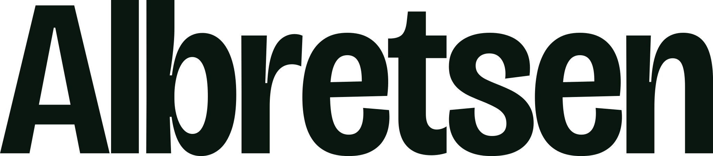
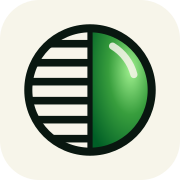
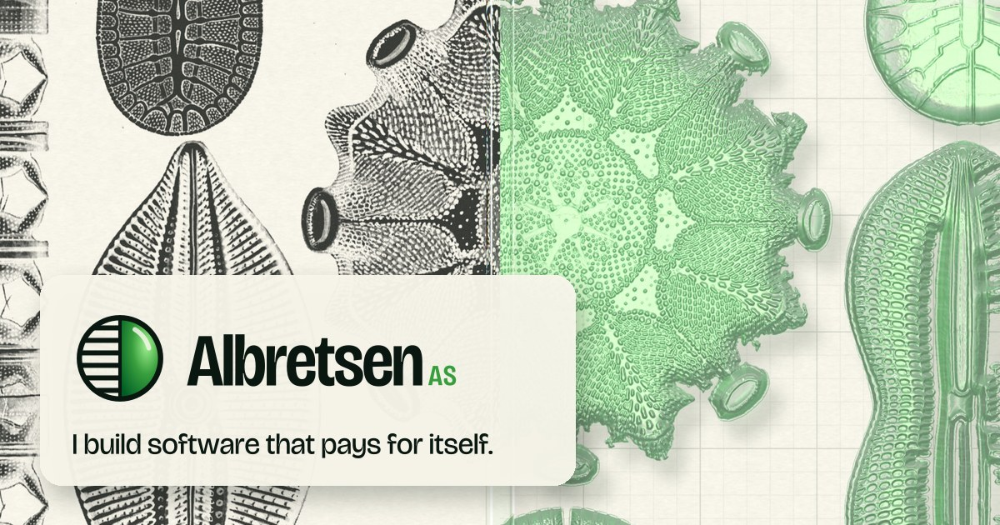
oklch(.968 .014 95)
#f7f5ea
oklch(.925 .020 95)
#eae6d8
oklch(.190 .025 160)
#091710
oklch(.500 .020 160)
#5a675f
oklch(.620 .165 144)
#389e3d
oklch(.420 .120 150)
#005e26
oklch(.930 .050 150)
#d1f2d7
oklch(.880 .150 140)
#a0f08f · light only
Still shipping.
Bricolage Grotesque does the shouting at large sizes (opsz 96, width 75 to 85, weight 560 to 680) and the reading at 16 to 19 px. Instrument Serif italic is the one human voice, used for a single phrase per screen. JetBrains Mono labels everything like an atlas plate.
claude mcp add albretsen https://albretsen.no/mcp
Plate II · Fig. 04 · 17 tools · about 100 email providers
Paperweights
Each live product is printed on the atlas sheet and kept under a ray-traced glass dome. The logos are the real files from _shared/products, untouched; the dome only magnifies them evenly. Harbor's mark uses currentColor, so it is printed in ink.


Retired · small lenses
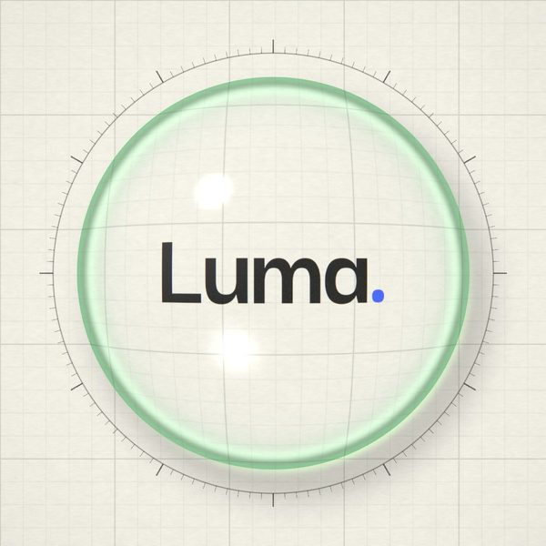


Cut-outs, in glass and in ink
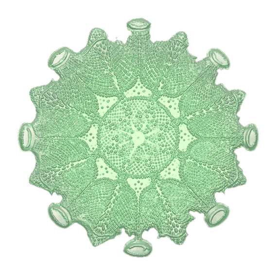
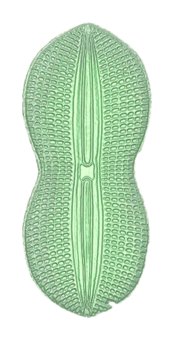
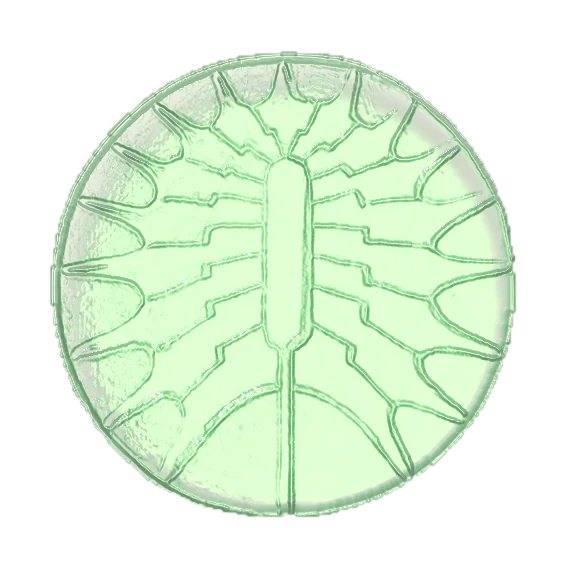
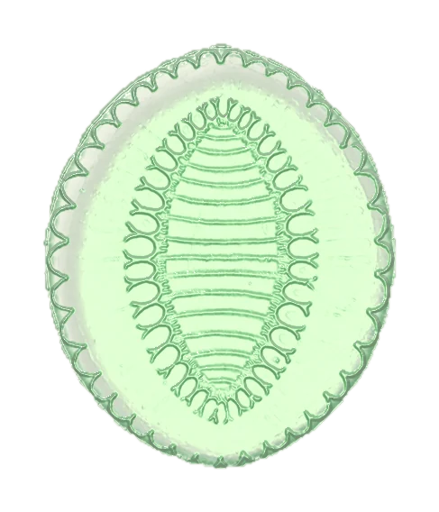
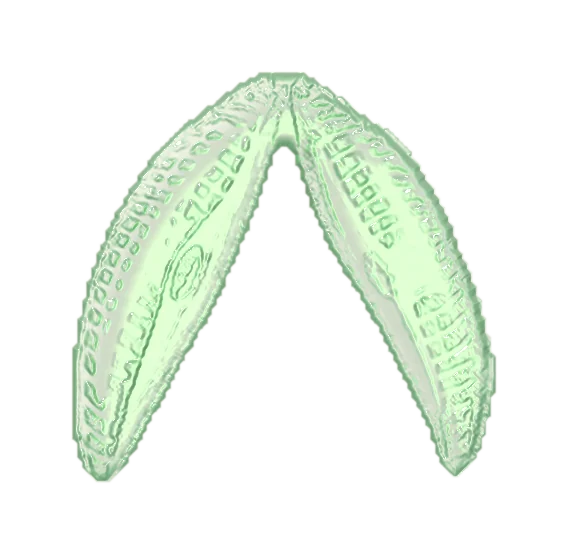
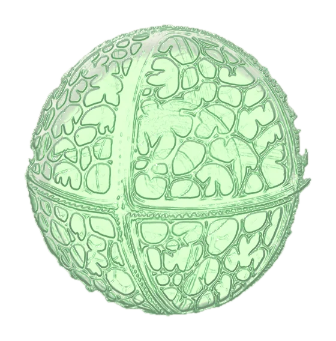
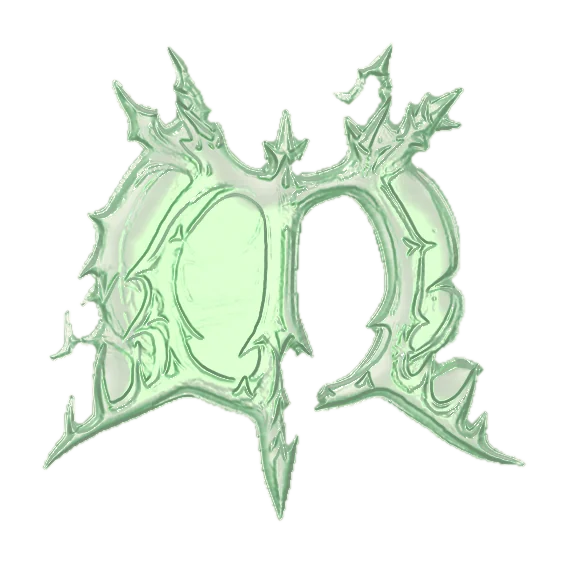
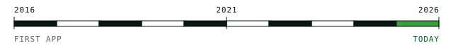
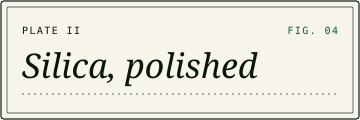

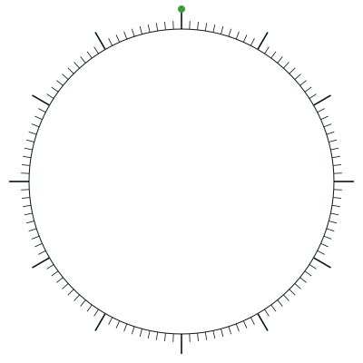
Silica Chorus
matter.js, loaded lazily. Products drop first, then specimens and lenses. Lenses refract the plate live, upside down. Drag anything; click bare paper to drop a lens. It pauses off screen and paints one still frame under reduced motion.
1 · Vitrify
The loading moment. Ink engraves the mark while the years count 2016 to 2026; the right half turns to glass on a spring; the sheet lifts off like a print from a press.
2 · Seam
The hero blade follows the pointer on a spring (170/24) and drifts toward "today" as you scroll past. It sweeps once on first view so people find it.
3 · Chorus
Staggered arrival: springs with one small overshoot, de-blur, fanning out from the origin. Used for product grids and specimen strips.
4 · Loupe
A heavy lens under the cursor (spring 260/26). Try it on Hero II.